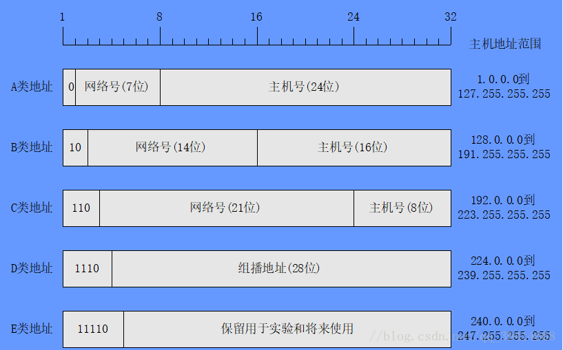

互联网(Internet)是指20世纪末期兴起电脑网络与电脑网络之间所串连成的庞大网络系统，这些网络以一些标准的网络协议相连。万维网(World Wide Web)亦称WWW、Web，是一个透过互联网访问的，由许多互相链接的超文本组成的系统。英国科学家蒂姆·伯纳斯-李于1989年发明了万维网。
一、基础
广域网(WAN)，就是我们通常所说的Internet，它是一个遍及全世界的网络，也称为公网、外网。公有地址，也称公有IP、公网ID，是由Inter NIC负责，这些IP地址分配给注册并向Inter NIC提出申请的组织机构，公有IP全球唯一。
局域网(LAN)是相对于广域网(WAN)而言，主要是指在小范围内的计算机互联网络，也称为私网、内网。局域网内每台计算机的IP地址在本局域网内是不可重复的，但两个局域网内的内网IP可以有相同的。
广域网上的每一台电脑(或其他网络设备)都有一个或多个广域网IP地址(公网IP、外网IP地址)，广域网IP地址一般要到ISP处交费之后才能申请到，广域网IP地址不能重复；局域网(LAN)上的每一台电脑(或其他网络设备)都有一个或多个局域网IP地址(私网IP、内网IP地址)，局域网IP地址是局域网内部分配的，不同局域网的IP地址可以重复，不会相互影响。
广域网与局域网之间如果要进行数据通信，必须经过中间的网关或路由器进行NAT(网络地址转换)。通常情况下，网关或路由器对内部向外发出的信息不会进行拦截，但对来自外部想进入内部网络的信息则会进行识别、筛选，认为是安全的、有效的，才会转发给内网电脑。
二、IP地址
互联网协议地址(Internet Protocol Address)，也称IP地址、网际协议地址，它是IP协议提供的一种统一的地址格式，它为互联网上的每一个网络和每一台主机分配一个逻辑地址，以此来屏蔽物理地址的差异。通俗的说，IP地址就是给每个连接在因特网上的主机(或路由器)分配一个在全世界范围是唯一的32位的标识符，它一种分等级的地址结构，由因特网名字与号码指派公司ICANN (Internet Corporation for Assigned Names and Numbers)进行分配。而MAC地址则是每台机器出厂时规定的唯一物理地址，共48位。
IP地址是有固定格式的，长度为32位(4字节)，每个地址都由网络号和主机号构成。为了便于人们读取，通常会把IP地址换算成十进制来标志，每8位(1字节)中间用.隔开。根据网络号和主机号的不同，可以分为A，B，C，D，E类地址。
简单理解：
IP地址 = 网络号 + 主机号。

A类地址
在IP地址的固定格式中，前8位是网络号，后24位是主机号，且网络号的最高位必须是0。用二进制表示其范围为00000000 00000000 00000000 00000000到01111111 11111111 11111111 11111111，转换到十进制即0.0.0.0到127.255.255.255，其中00001010 00000000 00000000 00000000到00001010 11111111 11111111 11111111(即十进制的10.0.0.0到10.255.255.255)为私有地址。B类地址
在IP地址的固定格式中，前16位是网络号，后16位是主机号，且网络号的最高位必须是10。用二进制表示其范围为10000000 00000000 00000000 00000000到10111111 11111111 11111111 11111111，转换到十进制即128.0.0.0到191.255.255.255，其中10001100 00010000 00000000 00000000到10101100 00011111 11111111 11111111(即十进制的172.16.0.0到172.31.255.255)为私有地址。
- C类地址
在IP地址的固定格式中，前24位是网络号，后8位是主机号，且网络号的最高位必须是110。用二进制表示其范围为11000000 00000000 00000000 00000000到11011111 11111111 11111111 11111111，转换到十进制即192.0.0.0到223.255.255，其中11000000 10101000 00000000 00000000到11000000 10101000 11111111 11111111(即十进制的192.168.0.0到192.168.255.255)为私有地址。
- D类地址
D类IP地址在历史上被叫做多播地址(multicast address)，也称组播地址。在以太网中多播地址命名了一组应该在这个网络中应用接收到一个分组的站点。多播地址的最高位必须是1110，范围从224.0.0.0到239.255.255.255。
- E类地址
IP地址中凡是以11110开头的E类IP地址都保留用于将来和实验使用，即十进制的240.0.0.0到247.255.255.255
网络号和主机号全0和全1的地址用于特殊目的，不允许使用；D类地址不标识网络；E类地址用于某些实验和将来使用，暂时保留。
三、子网与子网掩码
IP地址是以网络号和主机号来表示网络上的主机的，只有在一个网络号下的计算机之间才能直接互通，即网络号必须相同，不同网络号的计算机要通过网关(Gateway)才能互通。但这样的划分在某些情况下显得并不十分灵活，如一个A类地址可容纳的主机数是2^24 - 2个，如果网络的每次通信都将消息广播到这么多主机是多么可怕的事情。为此IP网络还允许划分成更小的网络，称为子网(Subnet)，与此同时也就产生了子网掩码。子网掩码的作用就是用来判断任意两个IP地址是否属于同一子网络(网络号是否相同)。
通俗的说，就是把IP地址的主机号拿出来一部分当做子网号，主机号剩余的部分当做子网主机号，即
包含子网的IP地址 = 网络号 + 子网号 + 子网主机号。
通过前文我们知道，IP地址分网络号和主机号，共32位。如果要将一个网络划分为多个子网，则网络号需要占用原有的主机号位。如对于一个C类地址，它用24位来标识网络号，要将其划分为2个子网则需要占用1位原来的主机标识位，此时网络号变为25位，主机号变为7位，此时子网掩码为11111111 11111111 11111111 10000000，即十进制的255.255.255.128。A/B/C类地址的默认子网掩码分别为255.0.0.0/255.255.0.0/255.255.255.0。
四、超网
超网(supernetting)，也称无类别域间路由选择(Classless Inter-Domain Routing，简写CIDR)，它消除了传统的A类、B类和C类地址以及划分子网的概念。CIDR使用各种长度的“网络前缀”来代替IP分类地址中的网络号和子网号，CIDR不再使用“子网”的概念而使用网络前缀，使IP地址从三级编址又回到了两级编址，即无分类的两级编址。
简单理解：
超网IP=网络前缀+主机号。
CIDR也使用“斜线记法”，即在IP地址后写上斜线“/”，然后写上网络前缀所占的位数。
五、扩展
查看公网IP地址
curl ifconfig.mecurl ipinfo.iocurl ipecho.net/plainwget http://ifconfig.me/ip
私有地址
| 类型 | 范围 |
|---|---|
| A类 | 10.0.0.0–10.255.255.255 |
| B类 | 172.16.0.0–172.31.255.255 |
| C类 | 192.168.0.0–192.168.255.255 |